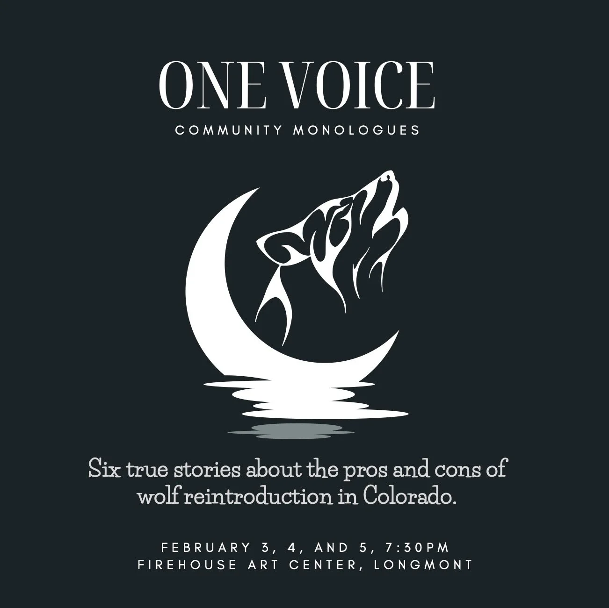

“As a trans woman of color, I’ve been through some difficult things. I rarely share my story with anyone but my therapist, and I struggle to love my own voice. Working on this project with Empathy Theatre Project taught me to love my own voice, and proved to me that my story is worth sharing. The laughter, tears, and applause that I got from the crowd when I performed was intoxicating.”— Ruby Lopez
Community Monologue Series
ONE VOICE IS YOUR CHANCE TO SHARE.
Empathy Theatre Project works with individuals in our community to brainstorm, write, edit, and perform nonfiction monologues. These stories respond to themes in our mainstage shows, and offer a further exercise in empathy for a multitude of lived experience and perspectives.
Writers perform their monologues live in front of an audience, and are accompanied by an original musical response.
We record these monologues and distribute them as episodes on our audio platform.



One Voice Series #2: Wolf Reintroduction
February 3, 4, and 5, 2023
7:30pm, Longmont Firehouse Art Center
Our recent monologue show tackled the issue of Wolf Reintroduction in Colorado, and was performed at the Firehouse Art Gallery in Longmont. For this show, we interviewed many stakeholders on the issue of wolf reintroduction in our state– from biologists, to ranchers, to poets, to indigenous land stewards. From those interviews, we created theatrical monologues that were performed by actors, accompanied by original music, and contextualized with visual art. The goal of this project was to foster dialogue about a complicated cultural and environmental topic, and to leave audiences with a greater understanding of how we can work together to create a more harmonious ecosystem.
One Voice Series #1: Gender Identity
JULY 16 & 17, 2022
Eight true stories about bravery, perseverance, and self-discovery through the lens of gender identity.
Recorded live at the Firehouse Art Center, Longmont, CO
Listen to One Voice #2: Wolf Reintroduction (full performance) on SoundCloud